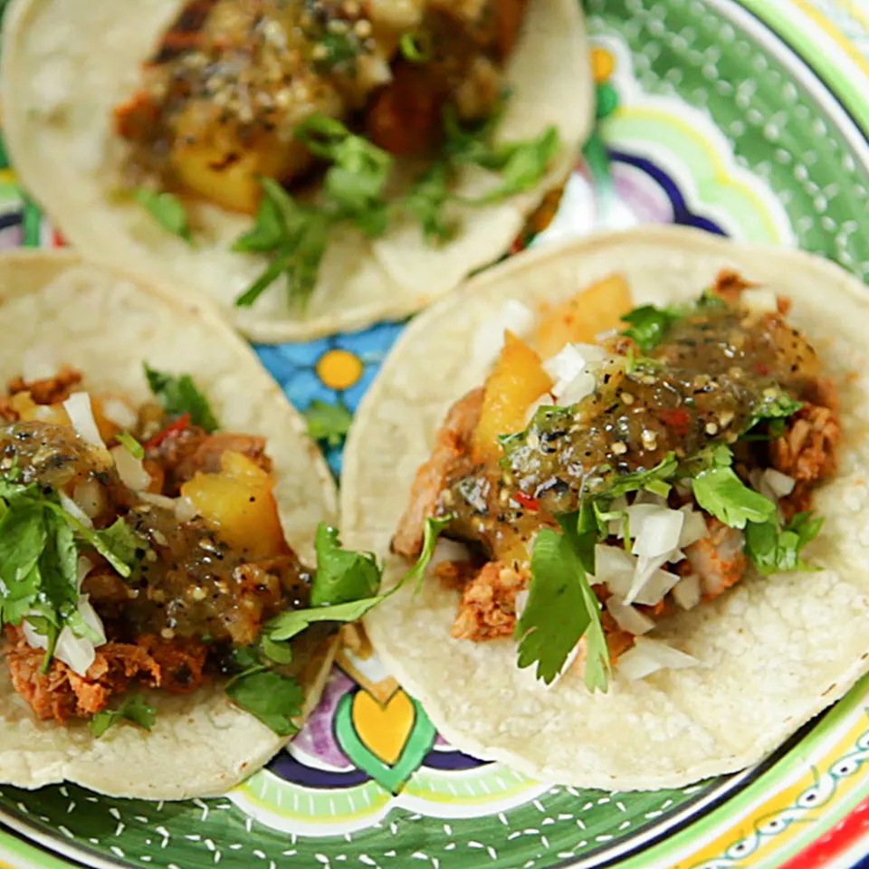

Authentic Tacos al Pastor

Description
Tacos al pastor is a quintessential Mexican dish, with tender pork and
pineapple marinated in a savory and aromatic chile sauce. Serve with warm
corn tortillas, tomatillos salsa, and lemon or lime wedges.
Ingredients
- 1 tomato
- 3 dried guajillo chile peppers, seeded
- 2 dried ancho chile peppers, seeded
- 1 pineapple, sliced 3/4-inch thick
- ½ cup orange juice
- 1 onion, quartered
- ¼ cup white vinegar
- 2 chipotle peppers in adobo sauce
- 1 tablespoon salt, or to taste
- 2 cloves garlic, crushed
- 3 cloves
- 1 teaspoon cumin seeds
- 1 teaspoon dried oregano
- 2 pounds boneless pork loin, thinly sliced
Steps
-
Roast, peel, and de-seed the tomatoes. Boil and drain the peppers.
- Make the marinade in a blender.
-
Marinate pork in the refrigerator for four hours or up to overnight.
- Grill and chop the remaining pineapple slices.
- Cook the pork on a grill pan until browned.
- Chop and serve the pork.